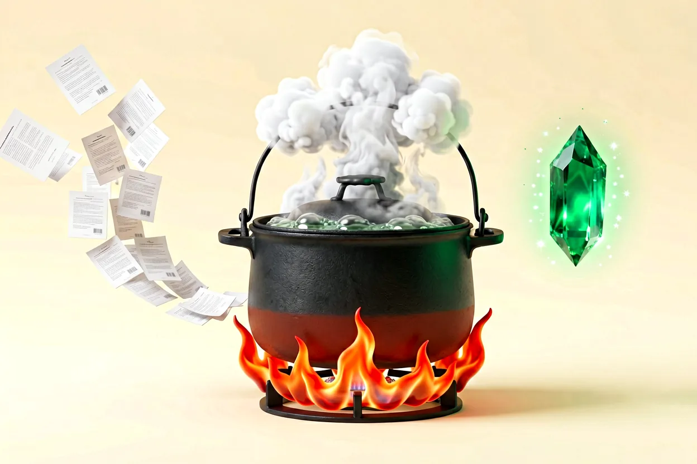

§ 01
来龙去脉
2026 年 AI 行业热词，一个被批评的行为，不是被推荐的方法。
"-maxxing" 是网络俚语后缀，意为把某事推向极端。tokenmaxxing = 把烧 token 推向极端——注意，推向极端的是"烧"，不是"效率"。
它源自硅谷炫耀性消费文化：用 token 烧量炫技，烧得越多越觉得"干了活"。微软已经叫停这类做法，社区给它的评语是 measuring fuel burned not distance covered（只量烧油，不量跑了多少里程）。
§ 02
易错点 · 这个词曾经被用反
本文原稿曾把 Tokenmaxxing 当成"省 token、花在刀刃上"的正面策略——定义方向正好用反。
词义警告
那套"该省省该花花"的正面做法有别的名字——不叫 tokenmaxxing。用错词，聊的就是反话。
✕ 反面 · 被批评
tokenmaxxing
把烧 token 推向极端。拿消耗量当产出，微软已叫停。
✓ 正面 · 该用这个词
contextmaxxing
把上下文工程做到极致。又叫"高效 token 分配"。
补充背景（高效 token 分配视角）：计费要分清两笔账，见下一节。
§ 03
核心图解 · 两笔账
省 token 之前，先知道钱花在哪——单价一笔、总量一笔。
第一笔 · 单价账
输出 ≈ 输入 × 3–5
输出 1M token$ 10
输入 1M token$ 2.5
举例GPT-4o
生成比阅读贵：模型"写"一个字，成本是"读"一个字的 3–5 倍。
第二笔 · 总量账
输入 常占大头
长对话每轮重读全部上下文
输入 : 输出几十～上百倍
总花费输入为大头
贵在"反复喂"：聊得越久，每句回答背后重读的上下文越多。
§ 04
该省的 vs 该花的
这叫"高效 token 分配"（contextmaxxing），不叫 tokenmaxxing。
该省 · 白烧的
✕机械重复每次说同一件事，烧两遍油
✕闲聊噪音不指向任何结论的来回
✕冗余信息贴一堆用不上的材料充篇幅
该花 · 值当的
✓多源交叉验证几个来源互相对质，结论才硬
✓深度研究让机器替你把海烧开
✓关键判断重大决策多花 token 不心疼
省的是噪音，花的是判断——不是一味省，也不是一味烧。
§ 05
两个前提 · 把海烧开
花 token 换效率之前，两个前提先立住。
1
得知道要什么
"随便聊聊" = 没地图烧油——方向没有，花多少都白花。
2
时间价值高于 token 成本
花 token 省下你的时间，这笔账就是值的。

20 个来源标出一致与反对
把海烧开喂核心问题
核心结论省下你的时间
§ 06
你已经在用
这套账你天天在算，只是没用这个词：
✓让铁柱读 20 篇文章再总结结论——标准的"把海烧开"，省的是你的时间
✕闲聊、反复问同一个问题——机械重复，白烧
✕换话题不 /clear——旧上下文每轮重读一遍，总量账爆炸
§ 07
边界与关联
- 省钱的前提是方向对——目标没想清楚，花多少都是浪费
- "把海烧开"适合研究类任务，简单问题不需要
- 2026 行业热词：Tokenmaxxing 是被批评的反面行为（微软已叫停），别再当"省 token"的正面策略用——那叫高效 token 分配 / contextmaxxing